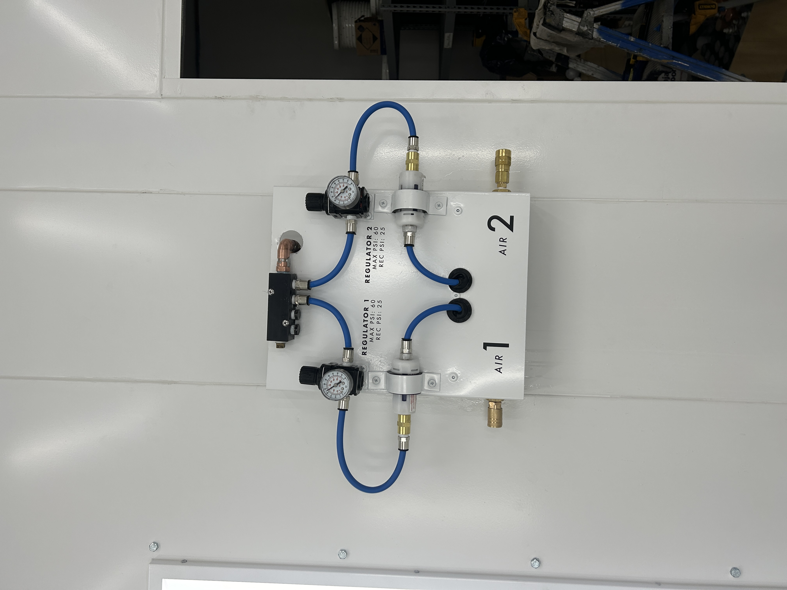
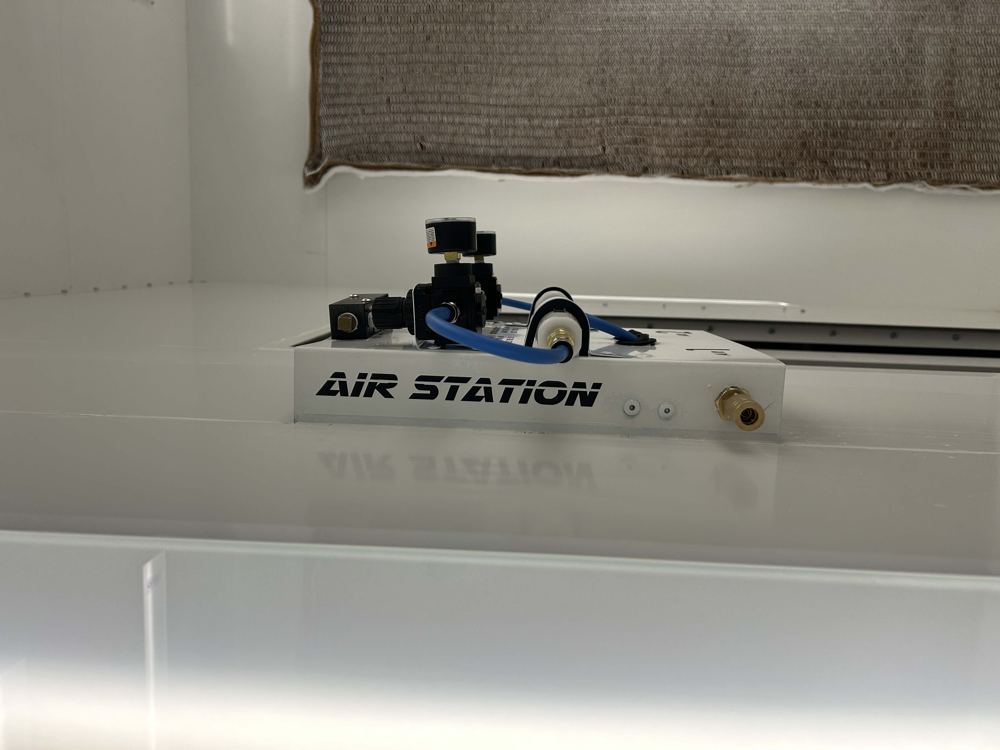
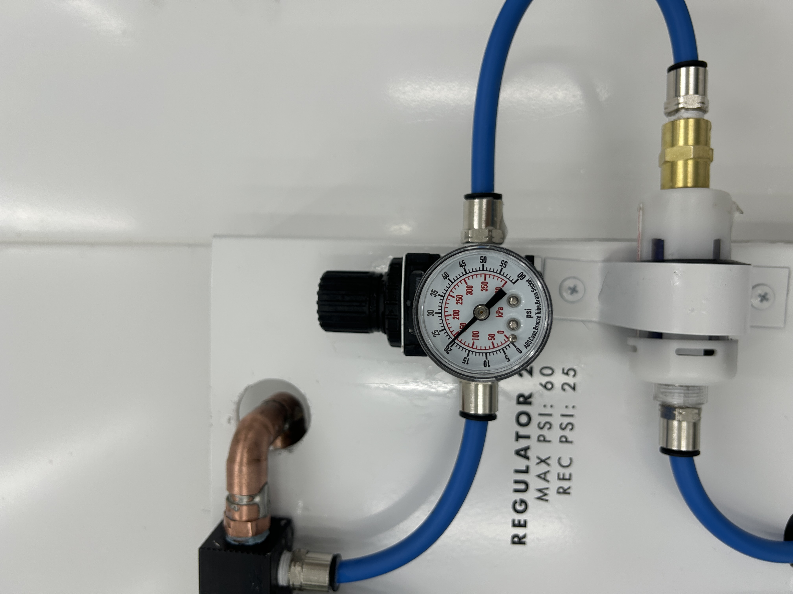
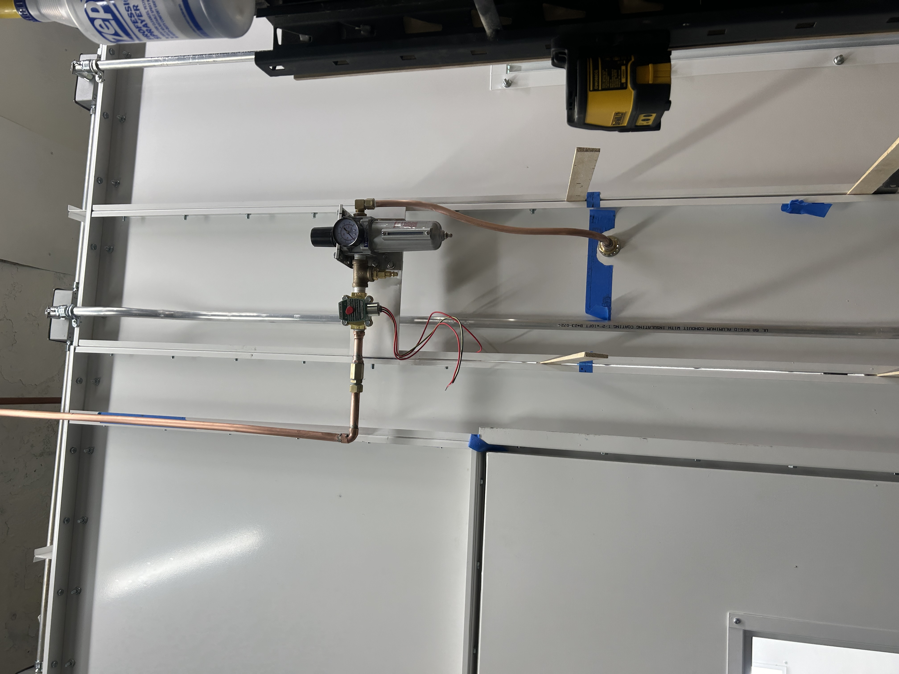
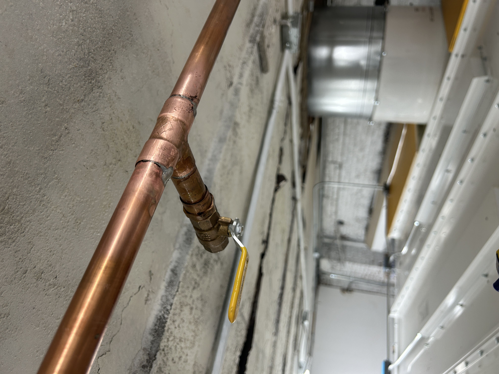

I have the NYC Certificate of Fitness A-35 to Operate and Maintain Air Compressors
I can repair and diagnose motors, pumps, pneumatic actuators and logic systems, run copper, pex, or rubber plumbing for your needs, and repair pneumatic tools such as:
Nailers
Sanders
Grinders
Paint Spray Guns
and much much more!
Here is a fully custom air connection system I designed, fabricated, and installed in a client's spraybooth. This function as a connection point for 3 tools (typically HVLP paint guns). Here we have the ability to easily connect disposable dessicant air driers, regulators available for tuning the air load, with only 1 entry point required to be drilled into the spraybooth wall. I prefer these small disposable units for painting applications, because they are relatively inexpensive, can be easily bypassed, and most importantly has an excellent flow rate.



Here is a view from the exterior of the booth. You can see the branch line, safety solenoid, and the particulate/oil filter.

